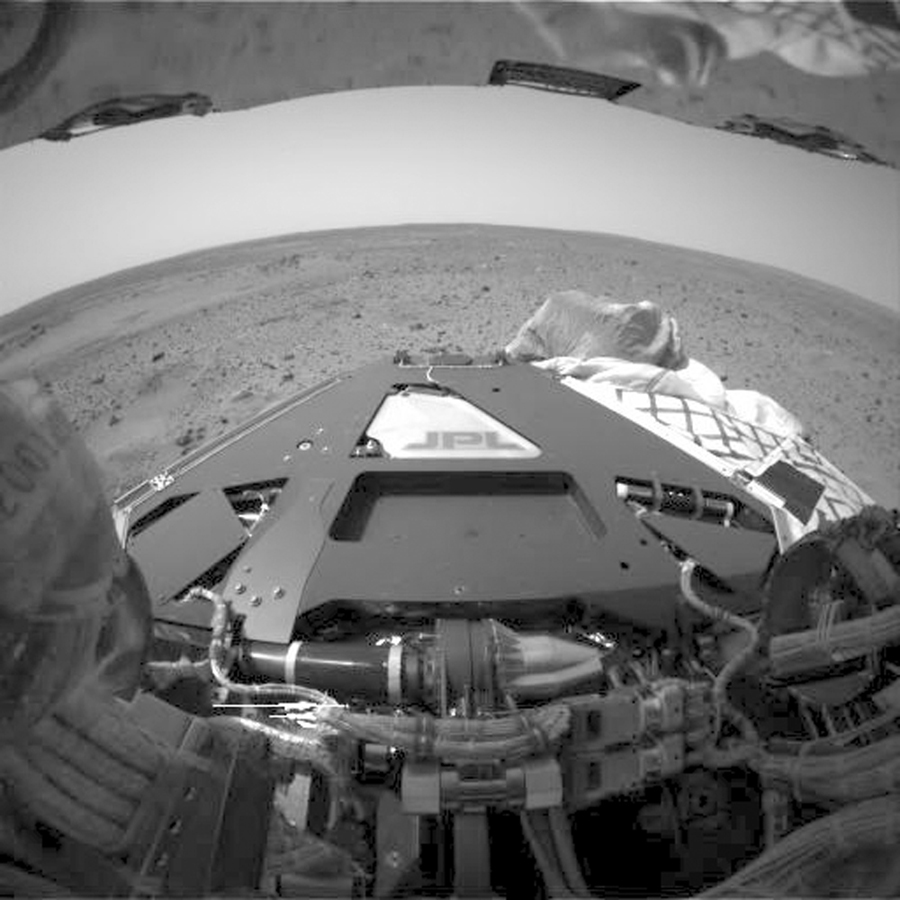

Spirit
2004-2010
Part of the Mars Exploration Rover mission, Spirit discovered evidence of ancient hot springs and volcanic activity, suggesting Mars once had conditions potentially suitable for life.
- Operated 6 years beyond planned 90-day mission
- Traveled 7.73 kilometers across Gusev Crater
- Discovered silica deposits indicating ancient hot springs